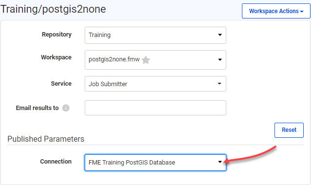

After completing this lesson, you’ll be able to:
When the source data for a dataset is a database, you can optionally store connection parameters in a secure container called a database connection. That container can be either published to FME Server or recreated on it.
Database connections are containers for a set of database connection parameters. These parameters include the database server, port number, username, password, and other parameters that vary according to the database type. Some database types support optional authentication parameters. For example, when creating a Database Connection on FME Server for PostgreSQL, there are optional authentication parameters which include: CA Certificate, Client Certificate, Client Private Key and SSL Password.
The two main advantages of database connections are:
Database connections can be published with a workspace from FME Desktop, or they can be added directly within FME Server.
Creating a database connection usually starts in FME Desktop. The connections can be created using Tools > FME Options > Database Connections in the FME Workbench menubar. The defined connection can then be used in a reader, writer, or transformer. Alternatively, when the author adds a Transformer, Reader or Writer to FME Workbench that requires a Database Connection but there is no existing connection for this format, they are prompted with the option to add a Database Connection from within this wizard.
As an example, this workspace has a connection for a PostGIS database, as seen in Navigator under the reader parameters and in the list of database connections:
When the workspace is published to FME Server a new dialog asks the author whether they would also like to publish the database connection:
The connection is then added to the connections container on FME Server.
FME Server has a page for managing database connections accessed through the main menu:

This page allows workspace authors - but usually administrators - to create new connections and copy, delete or edit existing connections:

When a workspace is run, if it has a database reader (for example) the end-user is prompted with a published parameter and can select the database connection to use:

The workspace then runs to completion as normal.
Just as for databases, when the source data for a dataset is a web service, FME is capable of storing connection parameters in a secure container called a web connection. That container can be either published to FME Server or recreated on it.
Web connections are containers for a set of web service connection parameters. These parameters include the service, username, password (or authenticated connection), and others that vary according to the service type.
The two main advantages of web connections are:
Web connections can be published with a workspace from FME Desktop, or they can be added directly within FME Server.
Creating a web connection often starts in FME Desktop. They can be created using Tools > FME Options > Web Connections in the FME Workbench menubar. The defined connection can then be used in a reader, writer, or transformer.
For example, this workspace reads a CSV dataset using a connection to a Google Drive web service, as seen in the Navigator under both the reader parameters and the list of web connections:

When the workspace is published to FME Server a new dialog asks the author whether they would also like to publish the web connection:
The connection is then added to the connections container on FME Server.
When a workspace is run, if it has a transformer or reader that references a web service then it will run correctly, just as on an FME Desktop installation.
In the published parameters on FME Server, the web connection can be defined in the source dataset URL:

Or, it can appear in a dropdown menu item if used as a published parameter in a workspace: